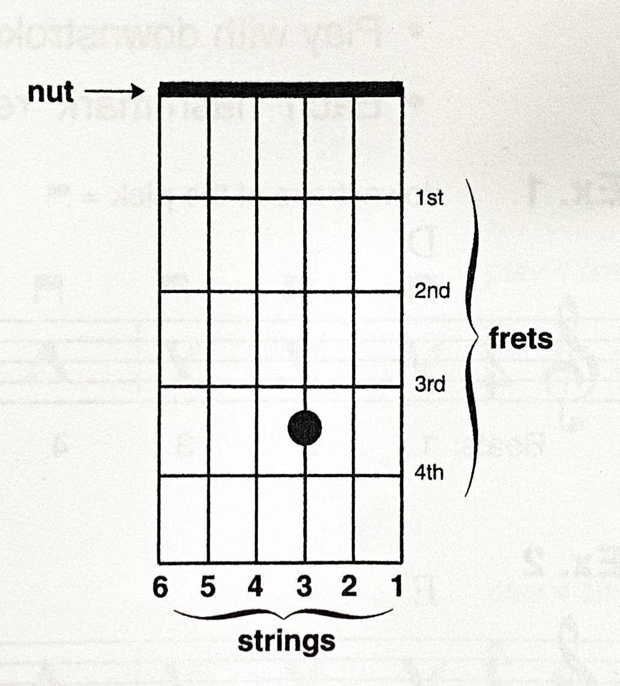
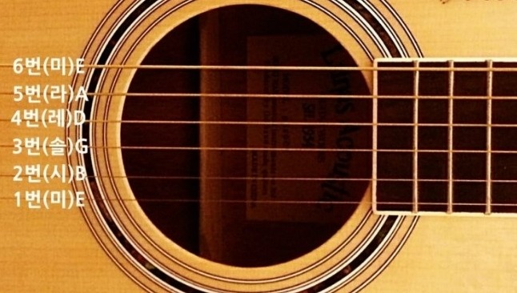

줄과 지판에 대해서

도표(다이어그램); 코드의 모양을 한눈에 파악할 수 있게 해주는 그림이다.
- ♣ 상현주(너트)를 시작으로 프렛과 지판은 순서가 주우욱 매겨진다.
- ♣ 도표 기준 1, 2, 3, 4, 5번 프렛까지 표시되고 있다.
- ♣ 도표 기준 1, 2, 3, 4, 5번 지판까지 표시되고 있다.
어쿠스틱 기타의 줄은 총 6개이다.
- ♣ 기타줄은 제일 굵고 낮은 줄부터 6, 5, 4, 3, 2, 1번 줄이라고 이름을 붙인다.(밑 그림 참고)
- ♣ 가장 얇고 높은 줄부터 올라가면 1, 2, 3, 4, 5, 6번 줄 순서가 된다.
- ♣ 줄마다 계이름이 있다. 우리는 지금부터 계이름과 코드에 알파벳을 사용한다.
| 6번 - 미[E] |
5번 - 라[A] |
4번 - 레[D] |
| 3번 - 솔[G] |
2번 - 시[B] |
1번 - 미[E] |
